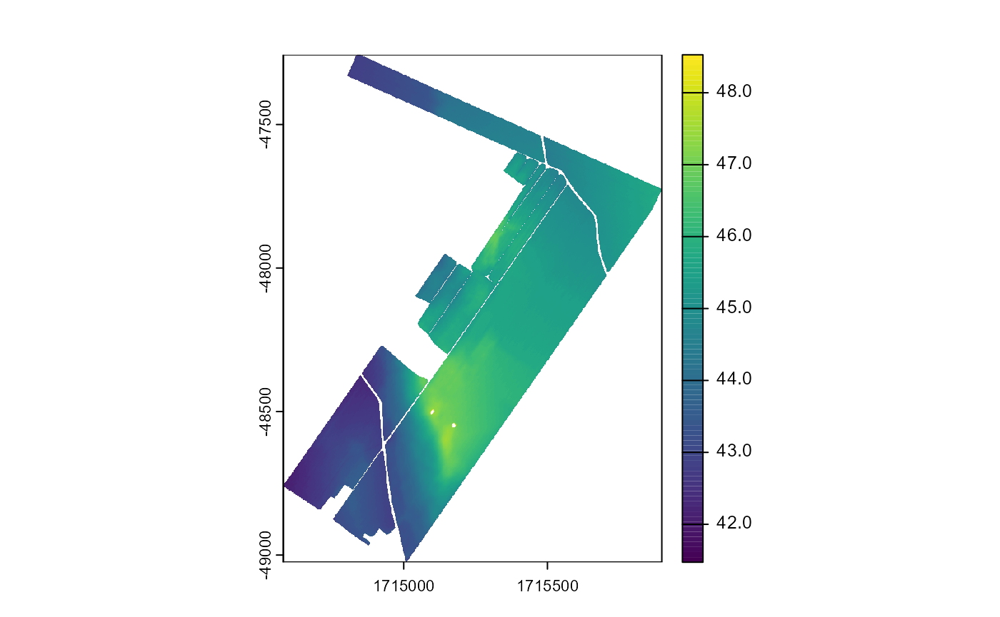
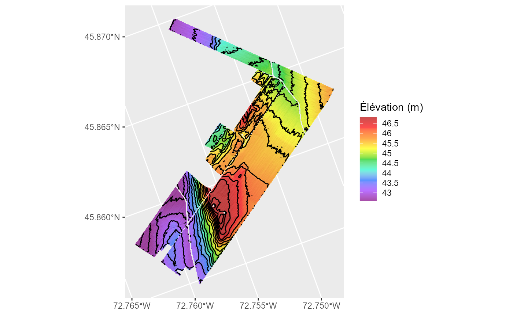
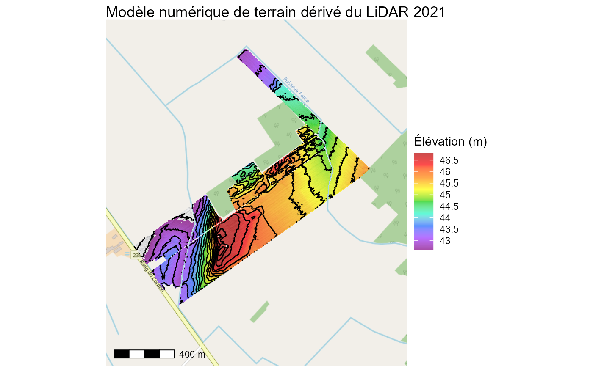

Données LiDAR et agriculture de précision
LiDAR.RmdQu’est-ce que le LiDAR?
Le LiDAR (Light Detection and Ranging) est une technologie de télédétection qui utilise des impulsions laser pour mesurer la distance entre un capteur et la surface de la Terre. En agriculture de précision, les données LiDAR permettent de :
Reconstituer un modèle du terrain (DTM – Digital Terrain Model)
Identifier les dépressions, pentes et zones humides
Modéliser le ruissellement, l’érosion et la variabilité du sol
Guider l’aménagement de zones tampon, de drainage ou de parcelles de culture
Le modèle de surface vs. le modèle de terrain
MNE (Digital Surface Model) : inclut les bâtiments, arbres, etc.
MNT (Digital Terrain Model) : représente uniquement le sol
Utiliser la fonction lidar()
La fonction lidar() permet d’interroger automatiquement
les données LiDAR disponibles sur le service STAC de Ressources
naturelles Canada, de les recadrer à une zone d’intérêt, et de les
sauvegarder si souhaité.
Exemple d’utilisation
# Télécharger et recadrer les modèles de surface (MNT) pour un champ
library(rgeoag)
resultats <- lidar(champs_exemple,
dossier = NULL,
recent= FALSE,
mne = FALSE)
resultats
#> [[1]]
#> class : SpatRaster
#> dimensions : 1768, 1317, 1 (nrow, ncol, nlyr)
#> resolution : 1, 1 (x, y)
#> extent : 1714581, 1715898, -49025, -47257 (xmin, xmax, ymin, ymax)
#> coord. ref. : NAD83(CSRS) / Canada Atlas Lambert (EPSG:3979)
#> source(s) : memory
#> varname : 2021
#> name : 2021
#> min value : 41.33249
#> max value : 48.61332
#>
#> [[2]]
#> class : SpatRaster
#> dimensions : 1768, 1317, 1 (nrow, ncol, nlyr)
#> resolution : 1, 1 (x, y)
#> extent : 1714581, 1715898, -49025, -47257 (xmin, xmax, ymin, ymax)
#> coord. ref. : NAD83(CSRS) / Canada Atlas Lambert (EPSG:3979)
#> source(s) : memory
#> varname : 2011
#> name : 2011
#> min value : 41.14948
#> max value : 48.23417Chaque élément de la liste retournée correspond à un raster pour une année donnée.
🖼️ Visualisation des résultats
Vous pouvez visualiser le modèle en utilisant
terra::plot() ou en intégrant le raster dans une carte
interactive avec leaflet.
terra::plot(resultats[[1]]) 
On peut également utiliser la fonction geom_topo, qui
permet de visualiser la topographie en ggplot

En tant que couche ggplot, il est facile ensuite de personnaliser la carte.
ggplot2::ggplot() +
ggspatial::annotation_map_tile(zoomin =0,progress = "none")+
geom_topo(resultats[[1]],
intervalle = .3,
ombrage = TRUE) +
ggspatial::annotation_scale()+
ggplot2::theme_void()+
ggplot2::labs(title = "Modèle numérique de terrain dérivé du LiDAR 2021")